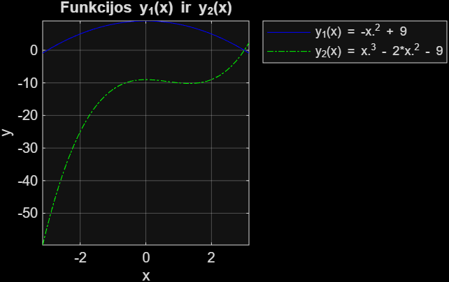
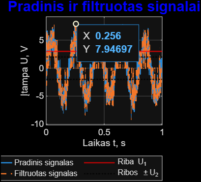

Funkcijos y(t) = sin(t) grafikas intervale nuo -π iki π (50 taškų). Nubrėžtas raudona punktyrine linija, pridėti tinklelis, ašių pavadinimai ir legenda.

Parabolė ir kubinė funkcija
Funkcijų y₁(x) = -x² + 9 ir y₂(x) = x³ - 2x² - 9 grafikai viename paveiksle. Funkcijos nubrėžtos skirtingomis linijomis ir spalvomis, kad jas būtų lengva palyginti.

Signalo filtravimas
Kairėje: sinusinis signalas su triukšmu ir filtruotas signalas, kuriame reikšmės žemiau slenksčio U₂ pakeistos nuliu. Dešinėje: reikšmės, viršijančios ribą U₁, su pažymėta didžiausia ir mažiausia įtampa.